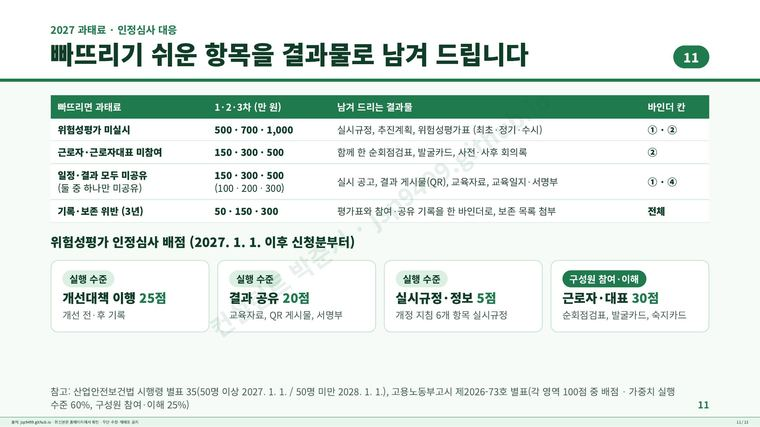
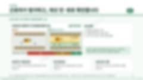
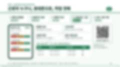

서류로 끝나지 않는 위험성평가 — 근로자 참여·결과 공유·기록까지 남기는 컨설팅 방법을 12장으로 정리했습니다.
사업장 예시는 가상 사업장('OO정밀')과 직접 그린 예시 그림입니다. 개선 그림은 "개선안 (예시 이미지)"로 표시했습니다.
근거: 산업안전보건법 제36조, 같은 법 시행령 별표 35·부칙, 사업장 위험성평가에 관한 지침(고용노동부고시 제2026-73호). 금액은 과태료 정리 자료에서 확인하세요.
자료 10쪽의 QR을 휴대폰으로 찍으면 실제로 쓰는 위험성평가 교육자료(23장) 페이지가 로그인 없이 열립니다. 근로자에게 결과를 이렇게 공유할 수 있다는 예시입니다.
위험성평가 컨설팅 서비스 안내 보기11쪽 '과태료 대응표 + 인정심사 배점'을 그대로 보여 드립니다. 전체 자료는 아래에서 무료로 내려받으세요.

11쪽 미리보기 · 눌러서 크게 보기
9쪽
10쪽이 자료는 일반적인 안내용 예시입니다. 사업장 업종·규모·작업에 맞게 보완해 사용하고, 법령은 국가법령정보센터(law.go.kr)에서 최신 내용을 확인하세요.